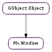

| static | get_for_stage(stage) |
| static | new() |
| static | new_with_clutter_stage(stage) |
| get_child() | |
| get_clutter_stage() | |
| get_fullscreen() | |
| get_has_toolbar() | |
| get_icon_name() | |
| get_small_screen() | |
| get_title() | |
| get_toolbar() | |
| get_window_position() | |
| get_window_rotation() | |
| get_window_size() | |
| hide() | |
| present() | |
| set_child(actor) | |
| set_fullscreen(fullscreen) | |
| set_has_toolbar(toolbar) | |
| set_icon_from_cogl_texture(texture) | |
| set_icon_name(icon_name) | |
| set_small_screen(small_screen) | |
| set_title(title) | |
| set_toolbar(toolbar) | |
| set_window_position(x, y) | |
| set_window_rotation(rotation) | |
| set_window_size(width, height) | |
| show() |
| Name | Type | Flags | Description |
|---|---|---|---|
| child | Clutter.Actor | r/w | Clutter.Actor used as the window child. |
| clutter-stage | Clutter.Stage | r/w/c | Clutter.Stage to use as the window. |
| fullscreen | bool | r/w | Window should be set to full-screen mode. |
| has-toolbar | bool | r/w | Window should have a toolbar. |
| icon-cogl-texture | str | r/w | Cogl.Texture to use for the window icon. |
| icon-name | str | r/w | Icon name to use for the window icon. |
| small-screen | bool | r/w | Window should occupy the entire screen contents, without explicitly setting itself fullscreen. |
| title | str | r/w | Title to use for the window. |
| toolbar | Mx.Toolbar | r/w | The Mx.Toolbar associated with the window. |
| window-rotation | Mx.WindowRotation | r/w | The window’s rotation. |
| window-rotation-angle | float | r | The current angle of rotation about the z-axis for the window. |
| window-rotation-timeline | Clutter.Timeline | r | The timeline used for the window rotation transition animation. |
| Name | Parameters | Return | Description |
|---|---|---|---|
| destroy | Emitted when the stage managed by the window is destroyed. |
| Name | Type | Access |
|---|---|---|
| parent | GObject.Object | r |
Bases: GObject.Object
The contents of this structure is private and should only be accessed using the provided API.
| Parameters: | stage (Clutter.Stage) – A Clutter.Stage |
|---|---|
| Returns: | A Mx.Window, or None |
| Return type: | Mx.Window |
Gets the Mx.Window parent of the Clutter.Stage, if it exists.
| Parameters: | stage (Clutter.Stage) – A Clutter.Stage |
|---|---|
| Returns: | A Mx.Window |
| Return type: | Mx.Window |
Creates a new Mx.Window, using stage as the backing Clutter.Stage. This function is meant for use primarily for embedding a Mx.Window into a foreign stage when using a Clutter toolkit integration library.
| Returns: | A Clutter.Actor, or None |
|---|---|
| Return type: | Clutter.Actor |
Get the primary child of the window. See Mx.Window.set_child ().
| Returns: | A Clutter.Stage |
|---|---|
| Return type: | Clutter.Stage |
Gets the Clutter.Stage managed by the window.
| Returns: | True if the window has been set to be in fullscreen mode, otherwise False |
|---|---|
| Return type: | bool |
Determines if the window has been set to be in fullscreen mode.
| Returns: | True if the window has a toolbar, otherwise False |
|---|---|
| Return type: | bool |
Determines whether the window has a toolbar or not. See Mx.Window.set_has_toolbar ().
| Returns: | The window icon name, or None |
|---|---|
| Return type: | str |
Gets the currently set window icon name. This will be None if there is none set, or the icon was set with Mx.Window.set_icon_from_cogl_texture ().
| Returns: | True if the window is in small-screen mode, otherwise False |
|---|---|
| Return type: | bool |
Determines if the window is in small-screen mode. See Mx.Window.set_small_screen ().
| Returns: | The title used for the window |
|---|---|
| Return type: | str |
Retrieves the title used for the window.
| Returns: | A Mx.Toolbar |
|---|---|
| Return type: | Mx.Toolbar |
Retrieves the toolbar associated with the window.
| Return type: | x: int, y: int |
|---|
Retrieves the absolute position of the window on the screen.
| Returns: | An Mx.WindowRotation |
|---|---|
| Return type: | Mx.WindowRotation |
Retrieve the rotation of the window.
| Return type: | width: int, height: int |
|---|
Retrieves the size of the display area of the window, taking into account any window border. This includes the area occupied by the window’s toolbar, if it’s enabled.
Hide the window
Present the window. The actual behaviour is specific to the window system.
| Parameters: | actor (Clutter.Actor) – A Clutter.Actor |
|---|
Adds actor to the window and sets it as the primary child. When the stage managed in the window changes size, the child will be resized to match it.
| Parameters: | fullscreen (bool) – True to request fullscreen mode, False to disable |
|---|
Set the window to be in fullscreen mode or windowed mode.
Setting fullscreen mode doesn’t necessarily mean the window is actually fullscreen. Setting this property is only a request to the underlying window system.
| Parameters: | toolbar (bool) – True if the toolbar should be displayed |
|---|
Sets whether the window has a toolbar or not. If the window has a toolbar, client-side window decorations will be enabled.
| Parameters: | texture (object) – A Cogl.Handle for a texture |
|---|
Sets the window icon from a texture. This will take precedence over any currently set icon-name.
| Parameters: | icon_name (str or None) – An icon name, or None |
|---|
Set an icon-name to use for the window icon. The icon will be looked up from the default theme.
| Parameters: | small_screen (bool) – True if small-screen mode should be enabled |
|---|
Enables or disables small-screen mode. This mode is meant primarily for platforms with limited screen-space, such as netbooks. When enabled, the window will take up all available room and will disable moving and resizing.
| Parameters: | title (str) – A string to use for the window title name |
|---|
Sets the title used for the window, the results of which are window-system specific.
| Parameters: | toolbar (Mx.Toolbar) – |
|---|
Sets the toolbar associated with the window.
| Parameters: |
|---|
Sets the absolute position of the window on the screen.
| Parameters: | rotation (Mx.WindowRotation) – The Mx.WindowRotation |
|---|
Set the rotation of the window.
| Parameters: |
|---|
Sets the size of the window, taking into account any window border. This corresponds to the window’s available area for its child, minus the area occupied by the window’s toolbar, if it’s enabled.
Setting the window size may involve a request to the underlying windowing system, and may not immediately be reflected.
Show the window